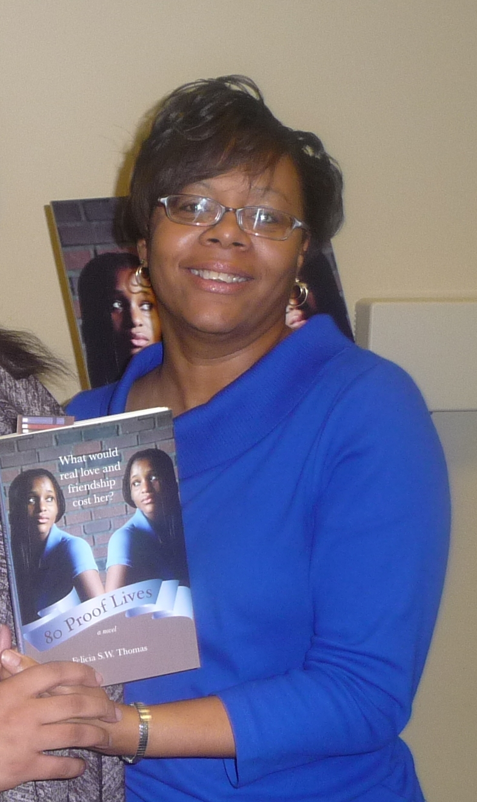
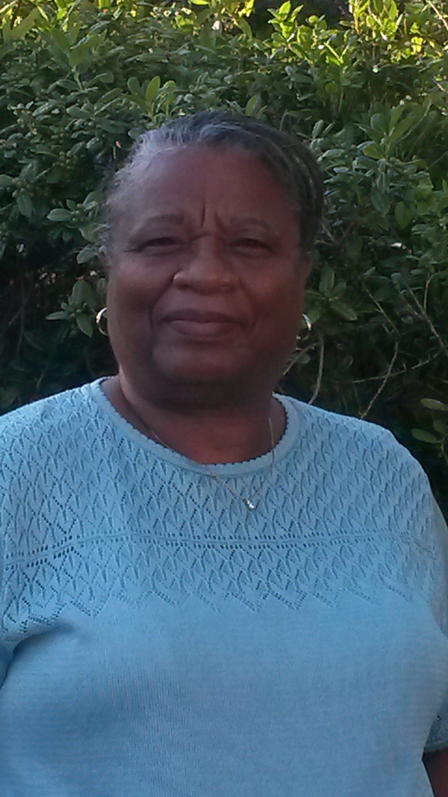
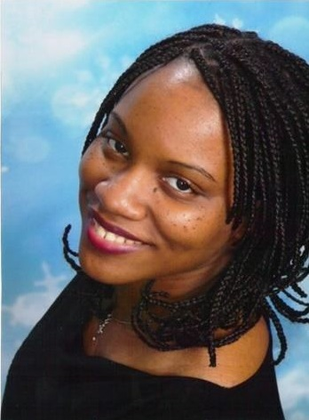
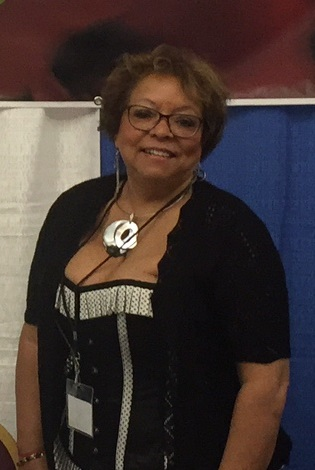
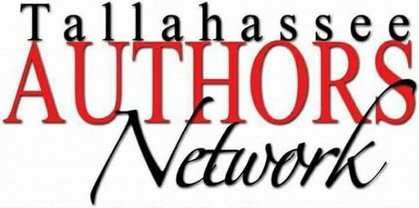

SPONSORSHIP LEVELS
Level 6: $250 Plus
Individual/Business name listed as sponsor onNorth Florida Literacy Festival (NFLF) promotional materials.
Level 5: $500 Plus
Individual/Business name listed as sponsor on NFLF promotional materials along with the individual/business logo, and a link to your website on the North Florida Literacy Festival website.
Level 4: $1,000 Plus
Individual/Business name listed as sponsor on NFLF promotional materials along with the individual/business logo, and a link to your website on the North Florida Literacy Festival website, and your promotional materials distributed at the festival.
Level 3: $2,500 Plus
Individual/Business name listed as sponsor on NFLF promotional materials along with the individual/business logo, a link to your website on the North Florida Literacy Festival website, and your promotional materials distributed at a free table during the festival. Additionally, you will recieve a Quarter page ad in the North Florida Literacy Festival pamphlet. The Tallahassee Authors Network (TAN) will assist you with one mutually agreed upon community activity.
Level 2: $5, 000 Plus
Individual/Business name listed as sponsor on NFLF promotional materials along with the individual/business logo, a link to your website on the North Florida Literacy Festival website, and your promotional materials distributed at a free table during the festival. Additionally, you will receive a Half page ad in the North Florida Literacy Festival pamphlet. The Tallahassee Authors Network (TAN) will assist you with one mutually agreed upon community activity.
Level 1: $10,000 Plus
Individual/Business name listed as sponsor on NFLF promotional materials along with the individual/business logo, a link to your website on the North Florida Literacy Festival website, and your promotional materials distributed at a free table during the festival. Additionally, you will receive a Full page ad in the North Florida Literacy Festival pamphlet. The Tallahassee Authors Network (TAN) will assist you with one mutually agreed upon community activity.
If and when you decide to donate you may decide to opt-in or opt-out, of your donor level being displayed.
Keynote Speaker
Kelly Milner Halls
Announcing the North Florida Literacy Festival's first keynote speaker: Kelly Milner Halls Please help us give her a warm welcome to Tallahassee in August!
Award winning children's nonfiction author Kelly Milner Halls is best known for her quirky choice of topics and extensive, journalistic research. Encouraging critical thinking skills through topics like Bigfoot, UFOs, ghostly entities, dinosaurs and mummies makes her a popular speaker at schools and festivals all over the country. "If we entertain the wonders of young readers, join them in their enthusiasm for discovery on the topics that pique them most, we have endless opportunities to learn and teach by their sides."
TALES OF THE CRYPTIDS, an exploration of mysterious animals that may or may not be real -- animals like Bigfoot and the Loch Ness Monster -- is perhaps her best known book title, with more than 40,000 copies sold in the past decade. ALIEN INVESTIGATION examines evidence for and against UFOs and aliens from other worlds. GHOSTLY EVIDENCE represents four years of paranormal research. And her newest title, DEATH EATERS maps out the science of decomposition in the natural world. While most of her 45 books are works of nonfiction, she has two novels inspired by true events on her resume -- BLAZING COURAGE, a novel about a girl who rescues horses, and DIVE INTO DANGER about a boy's brush with a humpback whale.
Future books will tackle topics including the microscopic tardigrade, chimpanzee rescue facilities and magical true stories written in geologic stone. She has written for children for 25 years, but other titles will soon follow. "As long as young readers are curious," Halls says, "I'll do my best to feed their curiosities with the best information I can find."
Halls makes her home in Spokane, Washington with two daughters, too many cats, a great dane and a four foot rock iguana named Gigantor.
Felicia S.W. Thomas

Practicing law is Felicia S.W. Thomas’ profession, but writing fiction and nonfiction is her passion. She has written an award-winning young adult novel, 80 Proof Lives, that has been assigned reading in several high schools in her local area. She has written short stories and collaborated on a how-to self-edit book that many authors find extremely helpful. As an editor and a ghostwriter, she stays busy working on several projects throughout the year. Felicia is a member of the Tallahassee Authors Network, and contributed to the Anthology, 21 Lives of Lissette Donavan, along with other Tallahassee Authors Network members. Felicia’s works can be found on Amazon.com, and her the audiobook for Double D Death and Double D Death II, on Audible.com. Felicia can be contacted at feliciathomas917@hotmail.com. Find her on Facebook @FeliciaSWThomasAuthor.
Barbara Joe Williams
Barbara Joe Williams is a bestselling author, publisher, speaker, editor, proofreader, and publishing consultant living in Tallahassee, Florida. She is a Navy veteran, a graduate of Tallahassee Community College, and Florida A & M University. She is the owner of Amani Publishing, LLC, and the co-founder of the Tallahassee Authors Network (TAN). Her Facebook group is titled: Barbara Joe Reads & Writes!
She has published over fifty authors and the following titles for herself: A Night to Remember (novelette), Holiday Hotel 3, Love Never Felt So Good, A-Z Basic Editing Tips, A-Z Writing Tips, Holiday Hotel 2, A-Z Marketing Tips, A Cup of Barbara Joe, Holiday Hotel 1,, Forgive Us This Day (Anniversary Edition) featured in USA Today, First Class Love, You Don't Even Know My Name (novella), A Writer's Guide to Publishing & Marketing (Volume 2), Double Proposal, Losing My Soul, A Man of My Own, The 21 Lives of Lisette Donavan (Anthology), Moving the Furniture: 52 Ways to Keep Your Marriage Fresh, How I Met My Sweetheart (Anthology), Courtney's Collage, Falling for Lies, Dancing with Temptation, and Forgive Us This Day.
Barbara has also published a four-book, Young Adult series titled, Bell Bottom High, under the pen name of B.J. Williams.
Forgive Us This Day (Anniversary Edition) is a rewritten version of the original title released in November 2004. She added more background on the main character and more drama for your reading pleasure in 2014.
Barbara was also featured in the January/February 2016 edition of Tallahassee Magazine as one of the Top 5 graduates of Tallahassee Community College.
All of her books are available on Amazon, BN, Kindle, and Nook.
Brenda Smith

Brenda Smith, PhD, is a retired educator, has been a teacher, an assistant superintendent of schools, and a college professor. Since retiring in 2004, her attention turned to contemporary fictional stories that she loves to share. She has written five novels, Insane Circumstances, Unforeseen Circumstances, Extreme Circumstances, Forbidden Love in Timbuktu (Woman From Another Land), and most recently, Kieta's Journey to the City, a book for middle and high school students The Circumstances Series and Forbidden Love in Timbuktu were published by Xlibris Publishing Company and Kieta's Journey to the City by Amani Publishing. All of them may be found at Amazon and other online stores. Summaries of her work can be found at forbiddenloveintimbuktu.com Brenda is married to Jerry. She is also a mother and grandmother, who resides in South Georgia. This author started the South Georgia Literacy Festival and serves as director of this effort which is supported by other writers, vendors, and community partners.
Nicole Perkins McLaughlin

Nicole Denise Perkins McLaughlin began writing in the seventh grade and has poems published in journals and anthologies. She received an Honorable Mention in the Writer's Digest 2000 writing competition for her stage play script Harlem Renaissance.
She received her BA in Theater from Florida A&M University. Nicole spent two seasons as the Managing Director of The Smithsonian Associates Discovery Theater for Children.
In 2004, she started Azreal Publishing, dedicated to publishing culturally diverse Christian books for children, teens, and young adults. To date, she has two self-published children’s books.
Amani Nigia Williams
Amani Nigia Williams is a teenager enrolled in high school in Tallahassee, Florida. She lives at home with both her parents who are very proud of her achievements. When she graduates from high school, Amani plans to enroll in college to pursue her dreams of becoming a chef and a veterinarian. One day, she plans to open an animal adoption shelter so that all homeless animals will have homes and good food to eat.
Amani is an active member of Life Eternal Ministries where she sings in the choir and is a new member of the Usher Board. When she’s not writing poetry, she enjoys reading fantasy and horror stories, watching fantasy and horror movies, listening to music, and hanging out with her friends.
In her first poetic release, Amani grabs you by the heart and captures your soul and spirit with her truthful poems. Come experience the power of poetry through the eyes of a teenager with this thought-provoking collections of poems. This is a must-read for every generation!
Kase Palmer
Kase Palmer is new to the world of publication. She has been creating little stories with dragons for her own amusement for years. Her favorite genres are Fantasy, Romance, and Science Fiction. She loves to read about magic, paranormal, and time travel story lines. Her favorite places to go are book stores with little coffee shops to drink a cup of mocha coffee and read a new book. Kase is from the mid-west; her home-state is Iowa, the land of corn and soybeans. She moved to Florida at the age of 19 with her family, where she has stayed and made her home. Kase is happily married. She and her husband James are a blended family with six children. Kase and her husband were blessed earlier this year with their first grandchild and have a second grandchild on the way. When she isn't writing or being a mother, Kase works full-time with the State of Florida helping at risk children and dependent adults.
Monique Bowden
Dr. Monica Hayes

Some years ago, it occurred to me that I had something to say about a subject near and dear to me: sensuality, sexuality, and ME! I laughed at myself when I realized I wanted to share my thoughts with others. Important people in my life encouraged me so I decided to put my thoughts on paper and to see how others might respond. It began as a lark, at least that’s what I told myself, it developed into a genuine interest, and became a desire to push my imagination.
I have enjoyed reading many of the erotic classics, as well as more recently published works. The notion of writing what I came to know was called erotica appealed to me.One of the most important discoveries I made was how wonderful it felt to give myself permission to imagine the moments…the touches, tastes and sounds; the wonderfully juicy feelings involved in sharing with a partner or with oneself.
Andrew Skerritt
Andrew J. Skerritt is author of Ashamed to Denial and the AIDS Epidemic in the South (Lawrence Hill Books). He is storytelling coach/news editor with the Tallahassee Democrat, which part of the USA Today Network – Florida. He has taught journalism at Florida A&M University and English composition at Tallahassee Community College.
He holds a bachelor’s from Howard University, an MLA from Winthrop University and an MFA in creative nonfiction from the University of Tampa. His essays and nonfiction regarding exile, displacement and the search for home have been published widely in publications such as the Root.com, Tampa Bay Times, Caribbean Quarterly, Tallahassee Democrat, Miami Herald and elsewhere.
Cynthia Rose

Cynthia M. Portalatín has been writing and journaling since the age of seven. Penning poems, cartoons and short stories in her teens, her love of recording experiences led her to obtain Bachelor of Arts degrees in print journalism and Spanish. She has loved theater since her teens where she danced and sang in her high school’s production of “Grease.” Since then she’s sung with church choirs and as background vocalist in music ministries and friends’ bands.
SoMo Playhouse’s August 1, 2017, presentation of “For Colored Girls Who Considered Suicide – When the Rainbow is Enuf” is Cynthia’s debut acting performance in a major speaking role. When she is not singing, producing or creating art, she is writing.
“Bloom Forever – A Poetry Journal” (2013, Amani Publishing – published as Cynthia Lamb) features 115 poems written between the ages of 17 to 45 and is available on Amazon.com. Her short story “When Love Hurts” is included in “Truth Awaits You on the Other Side: An Anthology about the Consequences of Sin.” (2014, Global Multi Media Enterprises – published as Cynthia Portalatín). She has also contributed poems to books by author Tremayne Moore and is co-writer and associate producer of the web series “Tallahassee Legal,” created and directed by Summer Hill Seven. In earlier years, she wrote briefly for the Capitol News Bureau at the Advocate Daily Newspaper, in Baton Rouge, Louisiana, and later joined the U.S. Department of Agriculture for a 20-year career in public relations and outreach where she received numerous state and national awards. She is an active member of the Tallahassee Authors Network and Big Bend Poet and resides with her daughter and Jack Russel-Beagle mix in Tallahassee, Florida. Her artist name is Cynthia Rose. Instagram: @lapoetachina
Hosted by 